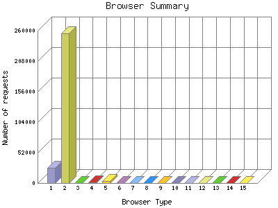

Analog 5.24
Analog 5.24 Report Magic for Analog 2.13
Report Magic for Analog 2.13The Browser Summary identifies the most popular web browsers used to visit
this site.
Browsers are broken down by recognized categories such as
Netscape Navigator/Communicator, Microsoft Internet Explorer, WebTV, Opera
and the like. Within each category is also a subgroup by version number
such as 'MSIE 5.0' or 'Netscape 4.5'.
This report is sorted by number of requests.

| Browser Type | Number of requests | Number of page requests in the last 7 days | Percentage of page requests in the last 7 days | |
|---|---|---|---|---|
| 1. | ZoominfoBot (zoominfobot at zoominfo dot com) | 26,001 | 3,681,900,572 | 6,748.27% |
| 2. | MSIE | 255,044 | 4,016,831,423 | 7,362.13% |
| MSIE/6 | 90,986 | 727,043,273 | 1,332.54% | |
| MSIE/7 | 99,692 | 1,115,430,216 | 2,044.39% | |
| MSIE/9 | 13,225 | 3,776,372,910 | 6,921.41% | |
| MSIE/5 | 5,966 | 1,278,618,537 | 2,343.48% | |
| MSIE/8 | 37,405 | 703,295,385 | 1,289.1% | |
| MSIE/10 | 4,755 | 3,765,875,962 | 6,902.18% | |
| MSIE/11 | 12 | 3,681,900,394 | 6,748.27% | |
| MSIE/2 | 698 | 3,068,833,492 | 5,624.62% | |
| MSIE/3 | 371 | 1,842,699,688 | 3,377.33% | |
| MSIE/4 | 403 | 1,229,632,786 | 2,253.70% | |
| 3. | YelpBot (https: | 379 | 3,681,900,413 | 6,748.27% |
| YelpBot (https://www | 379 | 3,681,900,413 | 6,748.27% | |
| 4. | The Knowledge AI | 652 | 3,681,900,411 | 6,748.27% |
| 5. | PRurl | 3,250 | 3,681,900,399 | 6,748.27% |
| 6. | Expanse indexes the network perimeters of our customers. If you have any questions or concerns, please reach out to: scaninfo@expanseinc.com | 13 | 3,681,900,398 | 6,748.27% |
| 7. | node-fetch | 4 | 3,681,900,396 | 6,748.27% |
| node-fetch/1 | 4 | 3,681,900,396 | 6,748.27% | |
| 8. | SeobilityBot (SEO Tool; https: | 6 | 3,681,900,395 | 6,748.27% |
| SeobilityBot (SEO Tool; https://www | 6 | 3,681,900,395 | 6,748.27% | |
| 9. | Wget | 314 | 3,688,898,358 | 6,761.9% |
| Wget/1 | 314 | 3,688,898,358 | 6,761.9% | |
| 10. | com.google.GoogleMobile | 20 | 3,688,898,358 | 6,761.9% |
| com.google.GoogleMobile/72 | 1 | 3,681,900,394 | 6,748.27% | |
| com.google.GoogleMobile/65 | 1 | 3,681,900,394 | 6,748.27% | |
| com.google.GoogleMobile/38 | 3 | 3,681,900,394 | 6,748.27% | |
| com.google.GoogleMobile/60 | 3 | 3,681,900,394 | 6,748.27% | |
| com.google.GoogleMobile/61 | 1 | 3,681,900,394 | 6,748.27% | |
| com.google.GoogleMobile/34 | 2 | 3,681,900,394 | 6,748.27% | |
| com.google.GoogleMobile/62 | 2 | 3,068,833,492 | 5,624.62% | |
| com.google.GoogleMobile/67 | 2 | 3,068,833,492 | 5,624.62% | |
| com.google.GoogleMobile/41 | 2 | 3,068,833,492 | 5,624.62% | |
| com.google.GoogleMobile/42 | 3 | 2,455,766,590 | 4,500.98% | |
| 11. | WordPress | 32 | 3,688,898,358 | 6,761.9% |
| WordPress/4 | 19 | 1,846,198,670 | 3,383.76% | |
| WordPress/3 | 13 | 1,842,699,688 | 3,377.33% | |
| 12. | "Mozilla | 253 | 3,685,399,376 | 6,754.68% |
| "Mozilla/5 | 253 | 3,685,399,376 | 6,754.68% | |
| 13. | 6 | 3,681,900,394 | 6,748.27% | |
| /n | 6 | 3,681,900,394 | 6,748.27% | |
| 14. | Go http package | 1 | 3,681,900,394 | 6,748.27% |
| 15. | Nokia6280 | 45 | 3,681,900,394 | 6,748.27% |
| Nokia6280/2 | 45 | 3,681,900,394 | 6,748.27% | |
| [not listed: 777] | 632,294 | 301,205,527 | 552.6% | |
This report was generated on March 14, 2021 06:14.
Report time frame December 19, 2013 00:28 to October 14, 2020 09:11.
| Web statistics report produced by: | |
| Analog 5.24 | Report Magic for Analog 2.13 |